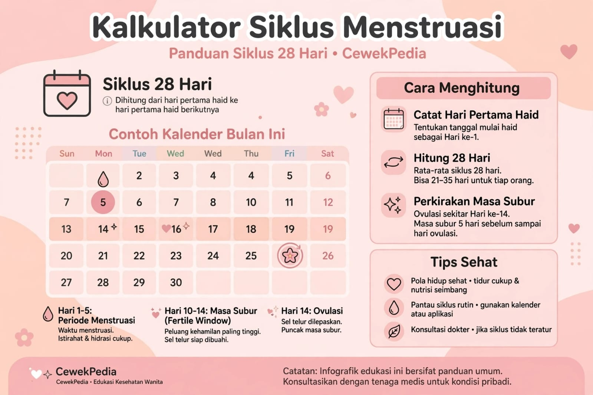

Menstruasi merupakan bagian alami dari siklus tubuh perempuan. Mencatat tanggal haid dapat membantu kamu mengenali pola siklus sendiri dan memperkirakan kapan menstruasi berikutnya mungkin datang. Kalkulator di atas dibuat sederhana agar mudah digunakan lewat HP.

Bagaimana cara kerja kalkulator haid?
Kalkulator menggunakan tanggal hari pertama haid terakhir dan panjang siklus yang kamu pilih. Contohnya, jika hari pertama haid terakhir adalah tanggal 1 dan siklus yang dipilih 28 hari, tanggal perkiraan haid berikutnya dihitung 28 hari setelah tanggal tersebut.
Pilihan lama menstruasi digunakan untuk memperkirakan hari terakhir haid berdasarkan kebiasaan yang kamu masukkan. Hasilnya bukan kepastian karena siklus dapat berubah dari bulan ke bulan.
1. Apa perbedaan siklus haid dan lama haid?
Siklus haid adalah jarak dari hari pertama satu menstruasi ke hari pertama menstruasi berikutnya. Lama haid adalah berapa hari perdarahan berlangsung dalam satu periode. Keduanya berbeda, jadi pilih berdasarkan kebiasaanmu masing-masing.
2. Apakah tanggal perkiraan haid pasti tepat?
Tidak. Hasil kalkulator hanya perkiraan berdasarkan siklus yang dipilih. Stres, perubahan pola tidur atau berat badan, kondisi hormonal, penggunaan obat, dan kehamilan dapat memengaruhi jadwal menstruasi.
3. Bagaimana jika haid terlambat?
Haid terlambat dapat disebabkan oleh variasi siklus, stres, perubahan berat badan, faktor hormonal, atau kehamilan. Jika ada kemungkinan hamil, pertimbangkan tes kehamilan sesuai petunjuknya. Jika haid tidak datang selama sekitar tiga bulan tanpa alasan yang jelas atau kamu merasa khawatir, hubungi tenaga kesehatan.
Kesimpulan
Kalkulator haid CewekPedia membantu memperkirakan jadwal menstruasi berdasarkan tanggal haid terakhir, panjang siklus, dan lama haid yang biasa kamu alami. Catat siklus secara berkala agar kamu dapat mengenali pola tubuh sendiri, sambil mengingat bahwa hasil hitungan kalender tidak selalu sesuai dengan tanggal haid sebenarnya.